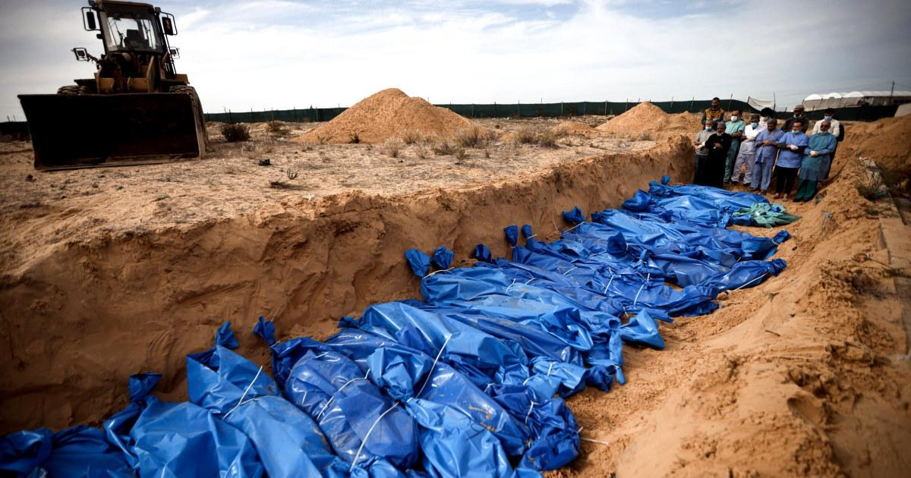

Half a year into the war in Gaza, here’s a look at the conflict by the numbersJERUSALEM — The Israel-Hamas war has stretched on for half a year and become one of the most destructive, deadly, and intractable conflicts of the 21st century. Since Hamas’ Oct. 7 cross-border attack, Israel has pummeled the Gaza Strip, displacing the vast majority of the population and causing many to flee to Gaza’s southernmost city, Rafah. Food is scarce, the U.N. says famine is approaching and few Palestinians have been able to leave the besieged territory. Meanwhile, Hamas continues to fire rockets into Israel from Gaza, and Hezbollah and other militant groups do so from southern Lebanon, prompting tit-for-tat fighting that has displaced thousands of civilians on both sides of Israel’s borders. Hamas is still holding hostages taken during the Oct. 7 raid, as well as the bodies of some who died in captivity. And cease-fire talks stretch on with no end in sight. Here’s a look at the conflict by numbers, which mainly come from the Israeli military and prime minister’s office, the Gaza health ministry, the U.N.’s Office for the Coordination of Humanitarian Affairs, and Associated Press reporting. TOTAL DEATHS Palestinians killed in Gaza: 33,137 Children killed in Gaza: more than 13,000 People killed in Israel: about 1,200 Palestinians killed in the West Bank: 456 People killed in Lebanon: at least 343 CIVILIANS Civilians killed in Gaza: Gaza’s health ministry doesn’t distinguish between civilians and combatants in its count, but it says women and children have made up around two-thirds of those killed. Civilians and foreigners killed in Israel on Oct. 7: 780 First responders killed in Israel on Oct. 7: 62 Civilians killed since Oct. 7 in Israel along its northern border: 9 Civilians killed in Lebanon: At least 50 Aid workers killed in Gaza: 224, including at least 30 killed in the line of duty Health workers killed in Gaza: 484 Journalists killed in Gaza: At least 95 SOLDIERS/MILITANTS Militants killed by Israel in Gaza: more than 13,000, according to the Israeli military Israeli soldiers killed in the Gaza ground offensive: 256 Israeli soldiers killed on Oct. 7: 314 Israeli soldiers killed along Israel’s northern front since Oct. 7: 11 Militants killed in Lebanon: About 280, mostly from Hezbollah DESTRUCTION/HUMANITARIAN SITUATION IN GAZA Percentage of buildings likely damaged/destroyed: 55.9% Percentage of homes likely damaged: more than 60% Percentage of school buildings damaged: 90% Hospitals that are functioning: 10/36 Palestinian civilians facing “catastrophic” food insecurity, according to the U.N.: 1.1 million Percentage of northern Gaza children under age 2 who are acutely malnourished: 31% Percentage of students out of school: 100% Mosques damaged: 227 Churches damaged: 3 INJURIES Palestinians injured in Gaza since Oct. 7: 75,815 Palestinians injured in the West Bank since Oct. 7: 4,750 Israeli soldiers injured since the beginning of the ground offensive: 1,549 Israeli civilians injured on Oct. 7: 4,834 DISPLACEMENT Palestinians currently displaced in Gaza: 1.7 million (70% of the population) Israelis currently displaced from border communities: 90,000 (under 1% of the population) HOSTAGES/PRISONERS Hostages taken by Hamas on Oct. 7: 253 Hostages freed: 123 Hostages who are alive or haven’t been confirmed dead: 98, including two who were taken before Oct. 7 Hostages confirmed to have died in Hamas captivity: 36, including two taken before Oct. 7 Palestinian prisoners freed during weeklong pause in fighting: 240 |
 |